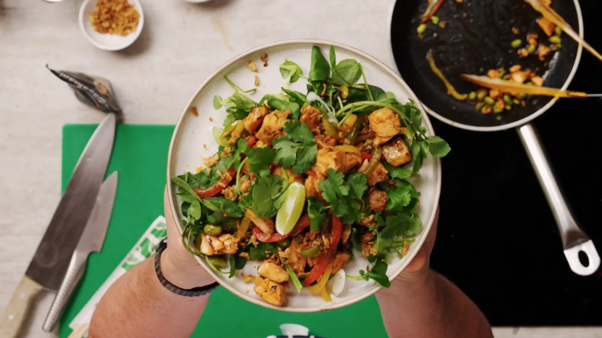

Teriyaki Salmon Salad

Description
A healthy + quick-to-make staple. with crunchy + fresh salad served with sticky teriyaki salmon, peppers + edamame. garnished with zingy fresh lime and coriander, this bowl is balanced and fresh, perfect for your midweek meal
Ingredients
- 1 tsp vegetable oil
- 250g salmon fillet, cut into 2 inch chunks
- 2 miked peppers, thinly sliced
- 1 tsp shichimi
- 1 nob of ginger, minced
- 150g edamame beans
- half a lime
- 1 wagamama teriyaki sauce
- 90g baby leaf salad
- half bunch of coriander
Back to Recipes